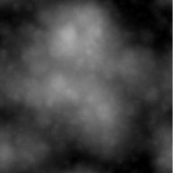

Voici les réglages par défaut lorsque vous choisissez l'"addition progressive de surfaces" dans la fenêtre "Nouveau document".
Notez que le premier "Filtre de forme" est global à l'image, alors que le "Filtre de forme" relié à la "Surface primitive" contrôle la cloche gaussienne utilisée comme bloc de construction.
La "racine" est utilisée pour changer pseudo-aléatoirement la distribution globale des surfaces.
Notez que le premier "Filtre de forme" est global à l'image, alors que le "Filtre de forme" relié à la "Surface primitive" contrôle la cloche gaussienne utilisée comme bloc de construction.
La "racine" est utilisée pour changer pseudo-aléatoirement la distribution globale des surfaces.

Voici une version à échelle réduite du terrain de 512x512 qui résulte de l'application des paramètrse par défaut.